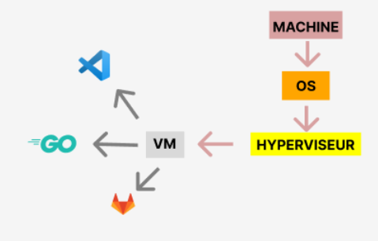

☰
Accueil
Contact
Matias Zocli
OBJECTIF :
Créer une machine virtuelle
Installer Git, Golang et VsCode
NOTIONS ACQUISES :
Utilisation approfondie de bash
Collaboration en équipe
Notions d'administrations
OUTILS UTILISÉS :
Terminal linux
VM Ware
LANGUAGE UTILISÉ :
Bash

Le schéma de l’architecture logicielle